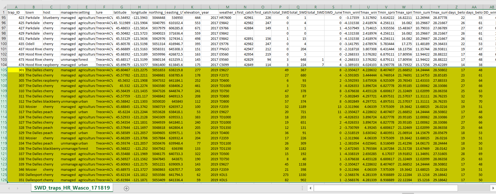

I often have to analyze data from multiple sources, such as websites, or collected from other stakeholders. In this case study, I collect weather data obtained from weather stations, and trap data for the Spotted-wing drosophila (SWD) collected by extension agents in a cherry-growing region.
Extension data is meant to be user-friendly and easy to understand for multiple audiences such as growers or field scouts. But that also means that it is a mess for data analysis and it needs a lot of cleaning up.
Here we are trying to understand what is the relationship between several weather parameters, and the abundance of spotted-wing drosophila (SWD) from multiple trap locations. The final dataset to analyze should look like this:
Columns A to M are constant variables, and provide information about each site. Columns N to end are SWD trap data, and summarized weather parameters such as maximum and minimum temperatures, degree days, precipitation, etc. I had done this dataset by hand for years 2017 and 2018 when I didn’t know any better, and for 2019 I wrote the following script to tidy, organize, and bind the data. I show this here with a lot of intermediate steps for clarity, but it can also be done in a single chunk connected by pipes without the need of creating intermediate dataframes.
First, this is what the SWD raw trap count data looks like, courtesy of Oregon State University extension service in Wasco county.
This dataset is meant to be easy to understand for stakeholders who consult it every week, but it is a data analysis nightmare. It has two headers, in row 1 it shows each date of sampling plus the totals, and the second header shows information about the sites. It also has two extra rows at the bottom showing total and average. The other issue is that it separates SWD by sexes, but in the end I only want total number.
I am going to clean this dataset so that at the end we are left with a dataframe that shows the total number of SWD collected in spring, in summer, and in the month of June.
First, import the raw table shown above. I use stringsAsFactors=FALSE to prevent R from converting all values into factors. Especially when there are headers or multiple headers, converting all values into factors does not make sense, as it will assign a level to “male SWD”. Rather, we want R to treat everything as a string and convert values manually.
library(tidyverse)
raw_swd <- read.csv("C:\\Users\\rendonda\\Documents\\Oregon State\\Datasheets\\SWD wild sites\\Wasco County 2019.csv", header=FALSE, stringsAsFactors=FALSE)| V1 | V2 | V3 | V4 | V5 | V6 | V7 | V8 | V9 | V10 | V11 | V12 | V13 | V14 | V15 | V16 | V17 | V18 | V19 | V20 | V21 | V22 | V23 | V24 | V25 | V26 | V27 | V28 | V29 | V30 |
|---|---|---|---|---|---|---|---|---|---|---|---|---|---|---|---|---|---|---|---|---|---|---|---|---|---|---|---|---|---|
| Totals | Totals | 8/20/2019 | 8/20/2019 | 8/8/2019 | 8/8/2019 | 7/31/2019 | 7/31/2019 | 7/24/2019 | 7/24/2019 | 7/15/2019 | 7/15/2019 | 7/7/2019 | 7/7/2019 | 6/21/2019 | 6/21/2019 | 6/6/2019 | 6/6/2019 | 5/31/2019 | 5/31/2019 | 5/24/2019 | 5/24/2019 | 5/17/2019 | 5/17/2019 | 5/10/2019 | 5/10/2019 | ||||
| location 1 | crop or host | location 2 | Trap ID# | male SWD | female SWD | male SWD | Female SWD | male SWD | Female SWD | male SWD | Female SWD | male swd | female swd | male swd | female swd | male swd | female swd | male SWD | female SWD | male SWD | female SWD | Male SWD | Female SWD | Male swd | Female SWD | male SWD | female SWD | male SWD | female SWD |
| The Dalles | cherry-comm. orch. | Cherry Heights | 301 | 13 | 28 | 9 | 90 | 4 | 121 | 3 | 78 | 1 | 19 | 0 | 10 | 32 | 0 | 0 | 0 | 0 | 8 | 0 | 9 | 0 | 1 | 13 | 17 | 0 | 1 |
| The Dalles | plum & blackberry-unmanaged | Mill Creek Rd | 302 | 27 | 66 | 11 | 199 | 4 | 88 | 0 | 107 | 1 | 41 | 0 | 29 | 0 | 0 | 0 | 0 | 4 | 4 | 8 | 12 | 4 | 11 | 11 | 37 | 0 | 6 |
| The Dalles | cherry-comm. orch. | Orchard Rd (OVF on Skyline) | 303 | 4 | 20 | 2 | 159 | 11 | 368 | 0 | 82 | 0 | 28 | 0 | 17 | 13 | 0 | 0 | 0 | 1 | 3 | 0 | 3 | 0 | 5 | 3 | 7 | 0 | 5 |
| The Dalles | raspberry-garden | Dry Hollow Lane | 305 | 0 | 3 | 4 | 44 | 6 | 10 | 3 | 3 | 0 | 0 | 0 | 3 | 20 | 0 | 0 | 0 | 0 | 2 | 0 | 1 | 0 | 0 | 0 | 2 | 1 | 0 |
| The Dalles | cherry-comm. orch. | Three Mile Rd. | 307 | 0 | 2 | 5 | 348 | 1 | 123 | 1 | 76 | 0 | 51 | 0 | 69 | 50 | 0 | 0 | 1 | 0 | 2 | 0 | 0 | 0 | 0 | 0 | 0 | 0 | 1 |
| The Dalles | cherry-comm. orch. | Three Mile Cemetery Block | 309 | 12 | 40 | 24 | 281 | 5 | 74 | 1 | 72 | 1 | 26 | 0 | 14 | 8 | 0 | 0 | 0 | 3 | 6 | 2 | 8 | 3 | 2 | 4 | 24 | 0 | 6 |
| The Dalles | cherry-comm. orch. | Steele Rd | 310 | 18 | 25 | 2 | 170 | 0 | 35 | 2 | 33 | 1 | 54 | 0 | 41 | 40 | 0 | 0 | 0 | 4 | 4 | 9 | 6 | 5 | 7 | 0 | 8 | 0 | 4 |
| The Dalles | cherry-comm. orch. | Benson Rd. via Five Mile | 311 | 1 | 3 | 0 | 23 | 0 | 14 | 2 | 26 | 0 | 6 | 0 | 9 | 7 | 0 | 0 | 0 | 1 | 6 | 0 | 1 | 0 | 0 | 0 | 2 | 0 | 0 |
We need to get the number of rows and columns in .csv that contain actual data. In this case,
# we delete 4 rows we will not use, because there are 2 headers and 2 rows with totals and averages at the bottom that we don't need.
num_rows <- nrow(raw_swd)-4
# Then specify row number (3rd) at which actual data starts in CSV
start_row <- 3
# Get number of columns in CSV
num_columns <- ncol(raw_swd)
# Column number at which actual data (i.e., the dates) starts in CSV
start_column <- 7Then I create an empty dataframe, where I manually add the column names from variables that I am interested in
mydataframe1 <- data.frame(location1 = character(),
crop_host = character(),
location2 = character(),
trap_ID = integer(),
sex = character(),
date = as.Date(character()),
count = integer()
)I then run a for-loop to extract information from each row and column in raw_swd. In for-loops, we define a variable that contains the counter in each loop iteration. Here, we name this variable ‘row_index’.
# In the outer loop, we sequentially go through all the data rows.
for (row_index in seq(start_row, num_rows+1)) {
# In the inner loop, we go through the dates with pairs of (male, female) columns. We start at 'start_column' defined above and go through to the last column, incrementing our counter 'col_index' by 2. That means that 'col_index' is the index of the column with the male SWD counts.
# When we access the counts for the female SWD further down, we use 'col_index+1' to get the value at the next column.
for (col_index in seq(start_column, num_columns, by=2)) {
# We then create a data row with the count of male SWD for the current trap and the current date. The current trap locations/crop host/TrapID# are in columns 1,2,3,4 in the current row. The current date is in first row of the current column.
myrow_male <- data.frame(location1 = as.character(raw_swd[row_index,1]),
crop_host = as.character(raw_swd[row_index,2]),
location2 = as.character(raw_swd[row_index,3]),
trap_ID = as.integer(raw_swd[row_index,4]),
sex = as.character("male"),
date = as.Date(raw_swd[1,col_index], format="%m/%d/%Y"),
count = as.integer(raw_swd[row_index,col_index])
)
# We add the male SWD data row to our empty dataframe
mydataframe1 <- rbind(mydataframe1, myrow_male)
# Then, we create a data row with the count of female SWD for the current trap and the current date. The current trap locations/crop host/TrapID# are in columns 1,2,3,4 in the current row. The current date is in first row of the current column. As mentioned at the inner loop above, we specify 'col_index+1' to access the female SWD counts, because we go through dates with pairs of (male, female) counts, and col_index points to the male column.
myrow_female <- data.frame(location1 = as.character(raw_swd[row_index,1]),
crop_host = as.character(raw_swd[row_index,2]),
location2 = as.character(raw_swd[row_index,3]),
trap_ID = as.integer(raw_swd[row_index,4]),
sex = as.character("female"),
date = as.Date(raw_swd[1,col_index+1], format="%m/%d/%Y"),
count = as.integer(raw_swd[row_index,col_index+1])
)
# We add the female SWD data row to our dataframe.
mydataframe1 <- rbind(mydataframe1, myrow_female)
}
}
# For each iteration for the whole loop above, it adds a new male and female rowThis is what the filled dataframe now looks like (showing first 10 rows):
| location1 | crop_host | location2 | trap_ID | sex | date | count |
|---|---|---|---|---|---|---|
| The Dalles | cherry-comm. orch. | Cherry Heights | 301 | male | 2019-08-20 | 9 |
| The Dalles | cherry-comm. orch. | Cherry Heights | 301 | female | 2019-08-20 | 90 |
| The Dalles | cherry-comm. orch. | Cherry Heights | 301 | male | 2019-08-08 | 4 |
| The Dalles | cherry-comm. orch. | Cherry Heights | 301 | female | 2019-08-08 | 121 |
| The Dalles | cherry-comm. orch. | Cherry Heights | 301 | male | 2019-07-31 | 3 |
| The Dalles | cherry-comm. orch. | Cherry Heights | 301 | female | 2019-07-31 | 78 |
| The Dalles | cherry-comm. orch. | Cherry Heights | 301 | male | 2019-07-24 | 1 |
| The Dalles | cherry-comm. orch. | Cherry Heights | 301 | female | 2019-07-24 | 19 |
| The Dalles | cherry-comm. orch. | Cherry Heights | 301 | male | 2019-07-15 | 0 |
| The Dalles | cherry-comm. orch. | Cherry Heights | 301 | female | 2019-07-15 | 10 |
For our final analysis, we are only interested in months and seasons, not individual dates, so we convert dates into seasons and months. The code below picks between ranges of dates and assigns a corresponding season (I got this code from https://stackoverflow.com/questions/9500114/find-which-season-a-particular-date-belongs-to).
# DATES is a name that we specify to refer to the argument of
# the function "getSeasons".
# When we call as an example 'getSeasons("2020-05-27")',
# DATES *inside* the function will have the value "2020-05-27". I chose the date ranges between the solstices and equinoxes to determine each season.
getSeason <- function(DATES) {
WS <- as.Date("2019-12-21", format = "%Y-%m-%d") # Winter Solstice
SE <- as.Date("2019-3-21", format = "%Y-%m-%d") # Spring Equinox
SS <- as.Date("2019-6-21", format = "%Y-%m-%d") # Summer Solstice
FE <- as.Date("2019-9-21", format = "%Y-%m-%d") # Fall Equinox
# Convert dates from any year to 2019 dates
d <- as.Date(strftime(DATES, format="2019-%m-%d"))
ifelse (d >= WS | d < SE, "Winter",
ifelse (d >= SE & d < SS, "Spring",
ifelse (d >= SS & d < FE, "Summer", "Fall")))
}Then we define month name using a similar function as above
getMonth <- function(DATES) {
strftime(DATES, "%B")
}I then create a new dataframe adding two new columns, season and month
mydataframe2 <- cbind(mydataframe1, season=getSeason(mydataframe1$date), month=getMonth(mydataframe1$date))| location1 | crop_host | location2 | trap_ID | sex | date | count | season | month |
|---|---|---|---|---|---|---|---|---|
| The Dalles | cherry-comm. orch. | Cherry Heights | 301 | male | 2019-08-20 | 9 | Summer | August |
| The Dalles | cherry-comm. orch. | Cherry Heights | 301 | female | 2019-08-20 | 90 | Summer | August |
| The Dalles | cherry-comm. orch. | Cherry Heights | 301 | male | 2019-08-08 | 4 | Summer | August |
| The Dalles | cherry-comm. orch. | Cherry Heights | 301 | female | 2019-08-08 | 121 | Summer | August |
| The Dalles | cherry-comm. orch. | Cherry Heights | 301 | male | 2019-07-31 | 3 | Summer | July |
| The Dalles | cherry-comm. orch. | Cherry Heights | 301 | female | 2019-07-31 | 78 | Summer | July |
| The Dalles | cherry-comm. orch. | Cherry Heights | 301 | male | 2019-07-24 | 1 | Summer | July |
| The Dalles | cherry-comm. orch. | Cherry Heights | 301 | female | 2019-07-24 | 19 | Summer | July |
| The Dalles | cherry-comm. orch. | Cherry Heights | 301 | male | 2019-07-15 | 0 | Summer | July |
| The Dalles | cherry-comm. orch. | Cherry Heights | 301 | female | 2019-07-15 | 10 | Summer | July |
I then create a new dataframe to add the SWD totals (not separated by sexes anymore) per trap for spring, summer, and June (the outcome variables I am ultimately interested in)
mydataframe3 <- mydataframe2 %>%
group_by(trap_ID) %>%
summarise(total_SWD_spring = sum(count[season=="Spring"], na.rm= TRUE),
total_SWD_summer = sum(count[season=="Summer"], na.rm= TRUE),
SWD_June = sum(count[month=="June"], na.rm= TRUE)
)| trap_ID | total_SWD_spring | total_SWD_summer | SWD_June |
|---|---|---|---|
| 301 | 49 | 367 | 8 |
| 302 | 97 | 480 | 8 |
| 303 | 27 | 680 | 4 |
| 305 | 6 | 93 | 2 |
| 307 | 3 | 725 | 3 |
| 309 | 58 | 506 | 9 |
| 310 | 47 | 378 | 8 |
| 311 | 10 | 87 | 7 |
| 312 | 57 | 374 | 8 |
| 315 | 32 | 1189 | 13 |
So now we have all SWD trap counts for each trap ID, but there is still more information relevant to each trap that we need to add from previous years.
Here I load an old dataframe with data from previous years 2017-2018, to which we will bind the new data from 2019 (showing only first 10 rows)
mydataframe4 <- read.csv("C:\\Users\\rendonda\\Documents\\Oregon State\\Datasheets\\SWD wild sites\\SWD traps Hood River Wasco.csv", stringsAsFactors=FALSE)| trap_ID | town | host | management | setting | lure | latitude | longitude | northing_UTM | easting_UTM | elevation_m | year | weather_station_uspest | first_catch_spring_date | first_catch_spring_day | total_SWD_spring | total_SWD_summer | total_SWD_winter | SWD_June | Tmin_winter | Tmax_winter | Tmin_spring | Tmax_spring | Tmin_summer | Tmax_summer | days_below_5_winter | days_below_0_winter | DD_winter | DD_spring | DD_summer | precipitation_winter | precipitation_spring | precipitation_summer |
|---|---|---|---|---|---|---|---|---|---|---|---|---|---|---|---|---|---|---|---|---|---|---|---|---|---|---|---|---|---|---|---|---|
| 301 | The Dalles | cherry | managed | agricultural | Trece+ACV | 45.60467 | -121.2275 | 5051653 | 638219.8 | 277 | 2018 | E9627 | 43245 | 145 | 3 | 5 | NA | 3 | 1.1538462 | 9.180769 | 8.129444 | 21.05967 | 13.24156 | 29.89433333 | 6 | 27 | 36.4 | 545.7 | 1577.2 | 105.410 | 162.306 | 164.592 |
| 303 | The Dalles | cherry | managed | agricultural | Trece+ACV | 45.577823 | -121.2211 | 5048681 | 638785.6 | 178 | 2018 | F2372 | 43227 | 127 | 3 | 11 | NA | 0 | -0.4653846 | 8.550769 | 6.931889 | 21.55711 | 11.59844 | 30.00411111 | 0 | 48 | 12.0 | 507.6 | 1474.2 | NA | NA | NA |
| 305 | The Dalles | raspberry | managed | agricultural | Trece+ACV | 45.565197 | -121.1908 | 5047332 | 641184.1 | 252 | 2018 | TD600 | 43227 | 127 | 3 | 2 | NA | 0 | 0.3479487 | 8.969744 | 6.410333 | 19.80567 | 11.78978 | 27.70266667 | 6 | 34 | 31.9 | 446.9 | 1335.2 | NA | NA | NA |
| 307 | The Dalles | cherry | managed | agricultural | Trece+ACV | 45.532002 | -121.2274 | 5043580 | 638406.2 | 461 | 2018 | TD1000 | 43237 | 137 | 2 | 11 | NA | 1 | -0.4296154 | 7.959872 | 6.238222 | 20.44167 | 11.72011 | 29.79355556 | 7 | 43 | 25.7 | 472.2 | 1435.0 | 186.944 | 222.504 | 225.552 |
| 310 | The Dalles | cherry | managed | agricultural | Trece+ACV | 45.56439 | -121.1435 | 5047326 | 644874.7 | 241 | 2018 | TD750 | 43227 | 127 | 12 | 2 | NA | 6 | 1.1315385 | 9.702949 | 7.064556 | 21.39767 | 12.94622 | 31.34144444 | 6 | 29 | 37.7 | 538.8 | 1605.1 | NA | NA | NA |
| 311 | The Dalles | cherry | managed | agricultural | Trece+ACV | 45.577594 | -121.1170 | 5048842 | 646913.5 | 208 | 2018 | TD800 | 43245 | 145 | 1 | 3 | NA | 1 | 0.5314103 | 9.435641 | 5.274556 | 21.41656 | 11.28267 | Tmin_wintertot_winter | 6 | 34 | 33.5 | 505.1 | 1477.2 | NA | NA | NA |
| 312 | The Dalles | blackberry | unmanaged | urban | Trece+ACV | 45.588418 | -121.1303 | 5050020 | 645843.0 | 112 | 2018 | TD800 | 43237 | 137 | 4 | 7 | NA | 3 | 0.5314103 | 9.435641 | 5.274556 | 21.41656 | 11.28267 | 30.37844444 | 6 | 34 | 33.5 | 505.1 | 1477.2 | NA | NA | NA |
| 315 | Mosier | cherry | managed | agricultural | Trece+ACV | 45.68845 | -121.3742 | 5060719 | 626597.2 | 100 | 2018 | F2359 | 43227 | 127 | 77 | 13 | NA | 31 | -0.0979487 | 8.295128 | 6.032667 | 18.66656 | 14.61467 | 28.91822222 | 0 | 38 | 8.1 | 340.6 | 1384.5 | NA | NA | NA |
| 317 | The Dalles | peach | managed | urban | Trece+ACV | 45.6224 | -121.2244 | 5053628 | 638418.1 | 53 | 2018 | E9627 | 43227 | 127 | 5 | 18 | NA | 5 | 1.1538462 | 9.180769 | 8.129444 | 21.05967 | 13.24156 | 29.89433333 | 6 | 27 | 36.4 | 545.7 | 1577.2 | 105.410 | 162.306 | 164.592 |
| 324 | The Dalles | cherry | managed | agricultural | Trece+ACV | 45.529334 | -121.2128 | 5043309 | 639553.1 | 383 | 2018 | TD1000 | NA | NA | 0 | 0 | NA | 0 | -0.4296154 | 7.959872 | 6.238222 | 20.44167 | 11.72011 | 29.79355556 | 7 | 43 | 25.7 | 472.2 | 1435.0 | 186.944 | 222.504 | 225.552 |
In dataframe4 (from previous years) we have information for each trap_ID such as location, latitude, longitude, setting, etc… But we still don’t have that information bound to mydataframe3 (from 2019)
To add the additional needed column variables to the 2019 data, we need to join the data from mydataframe3 and mydataframe4 by trap_ID. Here we are only using the mydataframe4 rows from 2018 (because in 2018 there were more weather stations than in 2017). There are additional traps in mydataframe3 that are not in mydataframe4, but here we are ignoring them (inner_join instead of left_join). The command inner_join gets the intersection of both dataframes, while left_join gets all the rows in mydataframe3 with data added from mydataframe4. We are not using left_join, because in this case we want to get rid of rows in mydataframe3 that don’t have corresponding entries in mydataframe4.
mydataframe5 <- mydataframe3 %>%
inner_join(mydataframe4 %>% filter(year == 2018) %>%
select(trap_ID, town, host, management, setting, lure, latitude,
longitude, northing_UTM, easting_UTM, elevation_m,
weather_station_uspest),
by="trap_ID") %>%
add_column(year = 2019)The resulting dataframe5 is a 2019 dataframe with all the column variables added
| trap_ID | total_SWD_spring | total_SWD_summer | SWD_June | town | host | management | setting | lure | latitude | longitude | northing_UTM | easting_UTM | elevation_m | weather_station_uspest | year |
|---|---|---|---|---|---|---|---|---|---|---|---|---|---|---|---|
| 301 | 49 | 367 | 8 | The Dalles | cherry | managed | agricultural | Trece+ACV | 45.60467 | -121.2275 | 5051653 | 638219.8 | 277 | E9627 | 2019 |
| 303 | 27 | 680 | 4 | The Dalles | cherry | managed | agricultural | Trece+ACV | 45.577823 | -121.2211 | 5048681 | 638785.6 | 178 | F2372 | 2019 |
| 305 | 6 | 93 | 2 | The Dalles | raspberry | managed | agricultural | Trece+ACV | 45.565197 | -121.1908 | 5047332 | 641184.1 | 252 | TD600 | 2019 |
| 307 | 3 | 725 | 3 | The Dalles | cherry | managed | agricultural | Trece+ACV | 45.532002 | -121.2274 | 5043580 | 638406.2 | 461 | TD1000 | 2019 |
| 310 | 47 | 378 | 8 | The Dalles | cherry | managed | agricultural | Trece+ACV | 45.56439 | -121.1435 | 5047326 | 644874.7 | 241 | TD750 | 2019 |
| 311 | 10 | 87 | 7 | The Dalles | cherry | managed | agricultural | Trece+ACV | 45.577594 | -121.1170 | 5048842 | 646913.5 | 208 | TD800 | 2019 |
| 312 | 57 | 374 | 8 | The Dalles | blackberry | unmanaged | urban | Trece+ACV | 45.588418 | -121.1303 | 5050020 | 645843.0 | 112 | TD800 | 2019 |
| 315 | 32 | 1189 | 13 | Mosier | cherry | managed | agricultural | Trece+ACV | 45.68845 | -121.3742 | 5060719 | 626597.2 | 100 | F2359 | 2019 |
| 317 | 20 | 721 | 11 | The Dalles | peach | managed | urban | Trece+ACV | 45.6224 | -121.2244 | 5053628 | 638418.1 | 53 | E9627 | 2019 |
| 324 | 18 | 203 | 0 | The Dalles | cherry | managed | agricultural | Trece+ACV | 45.529334 | -121.2128 | 5043309 | 639553.1 | 383 | TD1000 | 2019 |
Then we add mydataframe5 (2019) to mydataframe4 (all previous years), ensuring that all the columns in mydataframe4 that are not present in mydataframe5 are NAs, to be filled later.
mydataframe6 <- dplyr::bind_rows(mydataframe4, mydataframe5)| trap_ID | town | host | management | setting | lure | latitude | longitude | northing_UTM | easting_UTM | elevation_m | year | weather_station_uspest | first_catch_spring_date | first_catch_spring_day | total_SWD_spring | total_SWD_summer | total_SWD_winter | SWD_June | Tmin_winter | Tmax_winter | Tmin_spring | Tmax_spring | Tmin_summer | Tmax_summer | days_below_5_winter | days_below_0_winter | DD_winter | DD_spring | DD_summer | precipitation_winter | precipitation_spring | precipitation_summer |
|---|---|---|---|---|---|---|---|---|---|---|---|---|---|---|---|---|---|---|---|---|---|---|---|---|---|---|---|---|---|---|---|---|
| 301 | The Dalles | cherry | managed | agricultural | Trece+ACV | 45.60467 | -121.2275 | 5051653 | 638219.8 | 277 | 2018 | E9627 | 43245 | 145 | 3 | 5 | NA | 3 | 1.1538462 | 9.180769 | 8.129444 | 21.05967 | 13.24156 | 29.89433333 | 6 | 27 | 36.4 | 545.7 | 1577.2 | 105.410 | 162.306 | 164.592 |
| 303 | The Dalles | cherry | managed | agricultural | Trece+ACV | 45.577823 | -121.2211 | 5048681 | 638785.6 | 178 | 2018 | F2372 | 43227 | 127 | 3 | 11 | NA | 0 | -0.4653846 | 8.550769 | 6.931889 | 21.55711 | 11.59844 | 30.00411111 | 0 | 48 | 12.0 | 507.6 | 1474.2 | NA | NA | NA |
| 305 | The Dalles | raspberry | managed | agricultural | Trece+ACV | 45.565197 | -121.1908 | 5047332 | 641184.1 | 252 | 2018 | TD600 | 43227 | 127 | 3 | 2 | NA | 0 | 0.3479487 | 8.969744 | 6.410333 | 19.80567 | 11.78978 | 27.70266667 | 6 | 34 | 31.9 | 446.9 | 1335.2 | NA | NA | NA |
| 307 | The Dalles | cherry | managed | agricultural | Trece+ACV | 45.532002 | -121.2274 | 5043580 | 638406.2 | 461 | 2018 | TD1000 | 43237 | 137 | 2 | 11 | NA | 1 | -0.4296154 | 7.959872 | 6.238222 | 20.44167 | 11.72011 | 29.79355556 | 7 | 43 | 25.7 | 472.2 | 1435.0 | 186.944 | 222.504 | 225.552 |
| 310 | The Dalles | cherry | managed | agricultural | Trece+ACV | 45.56439 | -121.1435 | 5047326 | 644874.7 | 241 | 2018 | TD750 | 43227 | 127 | 12 | 2 | NA | 6 | 1.1315385 | 9.702949 | 7.064556 | 21.39767 | 12.94622 | 31.34144444 | 6 | 29 | 37.7 | 538.8 | 1605.1 | NA | NA | NA |
| 311 | The Dalles | cherry | managed | agricultural | Trece+ACV | 45.577594 | -121.1170 | 5048842 | 646913.5 | 208 | 2018 | TD800 | 43245 | 145 | 1 | 3 | NA | 1 | 0.5314103 | 9.435641 | 5.274556 | 21.41656 | 11.28267 | Tmin_wintertot_winter | 6 | 34 | 33.5 | 505.1 | 1477.2 | NA | NA | NA |
| 312 | The Dalles | blackberry | unmanaged | urban | Trece+ACV | 45.588418 | -121.1303 | 5050020 | 645843.0 | 112 | 2018 | TD800 | 43237 | 137 | 4 | 7 | NA | 3 | 0.5314103 | 9.435641 | 5.274556 | 21.41656 | 11.28267 | 30.37844444 | 6 | 34 | 33.5 | 505.1 | 1477.2 | NA | NA | NA |
| 315 | Mosier | cherry | managed | agricultural | Trece+ACV | 45.68845 | -121.3742 | 5060719 | 626597.2 | 100 | 2018 | F2359 | 43227 | 127 | 77 | 13 | NA | 31 | -0.0979487 | 8.295128 | 6.032667 | 18.66656 | 14.61467 | 28.91822222 | 0 | 38 | 8.1 | 340.6 | 1384.5 | NA | NA | NA |
| 317 | The Dalles | peach | managed | urban | Trece+ACV | 45.6224 | -121.2244 | 5053628 | 638418.1 | 53 | 2018 | E9627 | 43227 | 127 | 5 | 18 | NA | 5 | 1.1538462 | 9.180769 | 8.129444 | 21.05967 | 13.24156 | 29.89433333 | 6 | 27 | 36.4 | 545.7 | 1577.2 | 105.410 | 162.306 | 164.592 |
| 324 | The Dalles | cherry | managed | agricultural | Trece+ACV | 45.529334 | -121.2128 | 5043309 | 639553.1 | 383 | 2018 | TD1000 | NA | NA | 0 | 0 | NA | 0 | -0.4296154 | 7.959872 | 6.238222 | 20.44167 | 11.72011 | 29.79355556 | 7 | 43 | 25.7 | 472.2 | 1435.0 | 186.944 | 222.504 | 225.552 |
This concludes the first part of data cleanup from trap data. Now we have all the SWD catch information, but we still need to add the weather station information for 2019.
Each trap site is associated to a nearby weather station. The codes and location for each weather station were obtained from www.uspest.org. The data for a particular weather station looks like this:
Again, this is a mess because it has no clear headers, and we have temperature and precipitation data for every day that we will need to eventually transform.
First, we use mydataframe5 which already had all the variable information for 2019 data. Then, we need to select the weather station codes to search for. This chunk selects the unique weather station codes needed from mydataframe5 without duplicates (because some trap sites share the same weather station, therefore the same weather station code may be listed more than once)
weather_station_uspest_codes19 <- unique(mydataframe5$weather_station_uspest)I am going to use the library curl, to download information from websites.
library(curl)
#First, I define a variable for the URL
uspest_website <- "https://uspest.org/data/"
# Then, I specify a destination folder to save all the downloaded data
destination_folder <- "~/Oregon State/Datasheets/SWD wild sites/Weather station data/US pest stations/DD models/2019/" Then we download all data from uspest.org. This for-loop searches each weather station code in weather_station_uspest_codes19, downloads the corresponding data, and then saves the results to the destination folder specified above
# weather_station_code is a name we give to the variable inside the for-loop which has the current value of the weather station for each iteration
for (weather_station_code in weather_station_uspest_codes19) {
curl_download(url=paste(uspest_website, weather_station_code, "19.txt", sep=""), destfile=paste(destination_folder, "2019 ", weather_station_code, ".txt", sep="")) #this specifies the destination folder defined above and saves as text
}So now this folder with all the downloaded data for each weather station looks like this:
And each individual .txt file looks like this:
This is still a mess, it does not have proper headings, and we don’t need daily data, and eventually the weather variables that we want in the final analysis are the ones shown here in yellow (from an old 2018 database)…
To get there, this for-loop searches each one of the weather station .txt files, adds a column for cumulative sum of degree days (DD), a column for variable names (headers), and creates a .csv file for each in the same folder
#Extract column names from an old dataframe (in this case an existing 2017 dataframe)
col_names <- colnames(read.csv("~\\Oregon State\\Datasheets\\SWD wild sites\\Weather station data\\US pest stations\\DD models\\2017 C5099.csv"))
# weather_station_code is a name we give to the variable inside the for-loop which has the current value of the weather station for each iteration
for (weather_station_code in weather_station_uspest_codes19) {
mydataframe8 <- read.table(paste(destination_folder, "2019 ", weather_station_code, ".txt", sep=""), skip = 1) # skip = 1 skips the first row because they are not variable names
mydataframe8 <- cbind(mydataframe8, cumsum(mydataframe8[,6])) # Adds the cumulative sum from the 6th column (DD)
names(mydataframe8)<- col_names #Assigns column names as defined above
write.csv(mydataframe8, paste(destination_folder, "2019 ", weather_station_code, ".csv", sep=""), row.names = FALSE )
} #row.names = FALSE so that it does not add an additional column with row namesSo now each .csv file looks like this:
We then create an empty dataset with two column variables, station and year. We had already previously created mydataframe5 which only had 2019 information. This weather_station_list will be used in the chunks below
weather_station_list <- mydataframe5 %>%
select(year, weather_station_uspest)
names(weather_station_list) <- c("year", "station")The next chunk creates an empty data frame (pre-filled with NA) to store all the aggregated information, by manually writing all the column names for the specific weather variables I want in the final analysis. The column names can also be automatically extracted using a similar code as above when there is an existing database, but I wanted to show how to do this when one wants to specify column names by hand.
# Get number of items in the list
num_items <- nrow(weather_station_list)
weather_variables <- data.frame(weather_station_uspest=rep(NA, num_items), tmin_winter=rep(NA, num_items), tmax_winter=rep(NA, num_items), tmin_spring=rep(NA, num_items), tmax_spring=rep(NA, num_items), tmin_summer=rep(NA, num_items), tmax_summer=rep(NA, num_items), days_below_minus_5_winter=rep(NA, num_items), days_below_zero_winter=rep(NA, num_items), DD_winter=rep(NA, num_items), DD_spring=rep(NA, num_items), DD_summer=rep(NA, num_items), precipitation_winter=rep(NA, num_items), precipitation_spring=rep(NA, num_items), precipitation_summer=rep(NA, num_items))| weather_station_uspest | tmin_winter | tmax_winter | tmin_spring | tmax_spring | tmin_summer | tmax_summer | days_below_minus_5_winter | days_below_zero_winter | DD_winter | DD_spring | DD_summer | precipitation_winter | precipitation_spring | precipitation_summer |
|---|---|---|---|---|---|---|---|---|---|---|---|---|---|---|
| NA | NA | NA | NA | NA | NA | NA | NA | NA | NA | NA | NA | NA | NA | NA |
| NA | NA | NA | NA | NA | NA | NA | NA | NA | NA | NA | NA | NA | NA | NA |
| NA | NA | NA | NA | NA | NA | NA | NA | NA | NA | NA | NA | NA | NA | NA |
| NA | NA | NA | NA | NA | NA | NA | NA | NA | NA | NA | NA | NA | NA | NA |
| NA | NA | NA | NA | NA | NA | NA | NA | NA | NA | NA | NA | NA | NA | NA |
| NA | NA | NA | NA | NA | NA | NA | NA | NA | NA | NA | NA | NA | NA | NA |
| NA | NA | NA | NA | NA | NA | NA | NA | NA | NA | NA | NA | NA | NA | NA |
| NA | NA | NA | NA | NA | NA | NA | NA | NA | NA | NA | NA | NA | NA | NA |
| NA | NA | NA | NA | NA | NA | NA | NA | NA | NA | NA | NA | NA | NA | NA |
| NA | NA | NA | NA | NA | NA | NA | NA | NA | NA | NA | NA | NA | NA | NA |
One problem is that the old data to match is in metric system (mm for precipitation and C for temperature), while the new datasets are in imperial (inches and farenheit). So first I write a function to convert inches to mm and Farenheit to Celsius
#function to convert inches to mm (precipitation)
inchesToMM <- function(length_inch) {
return (length_inch * 25.4)
}
#function to convert F to C (min, max, DD)
FtoC <- function(farenheit){
C = (farenheit - 32)*(5/9);
return(C)
}The code below then computes values for days below -5 C, days below 0 C, DD winter/spring/summer, precipitation winter/spring/summer for all weather stations. It goes through every single .csv file for each weather station in the folder, and then compiles all the values into a single dataframe. It uses weather_station_list to search all the corresponding .csv files that have the name format “year station.csv”
# Go through the entire list
for(n in seq(1, num_items)) {
# Make sure there is year and station available for that item
if (!is.na(weather_station_list$year[n]) && !is.na(weather_station_list$station[n])) {
# Create file name based on year and station identifier
file_name <- paste("C:/Users/rendonda/Documents/Oregon State/Datasheets/SWD wild sites/Weather station data/US pest stations/DD models/2019/", weather_station_list$year[n], " ", weather_station_list$station[n], ".csv", sep="")
print(file_name)
if (file.exists(file_name)) {
# Read in weather station data file
data <- read.csv(file_name, na.strings = "M", stringsAsFactors = FALSE)
# Add column with temperatures converted to Celsius and rain inches converted to MM
data <- cbind(data, rain_mm=inchesToMM(data$precip))
data$min <- FtoC(data$min)
data$max <- FtoC(data$max)
data$DD10 <- pmax(FtoC(data$DD10), 0.0)
data$CUMDD10 <- pmax(FtoC(data$CUMDD10), 0.0)
# Create subsets of data corresponding to each season / year
if (weather_station_list$year[n] == 2019) {
data$Date = as.Date(paste("2019-",sprintf("%02d-%02d", data$mn,data$day),sep="")) #create a year-month-day column
date_start <- "2018-12-21"
date_winter <- "2019-03-20"
date_spring <- "2019-06-20"
date_summer <- "2019-09-20"
}
data_winter <- data %>% filter(Date > date_start & Date < date_winter)
data_spring <- data %>% filter(Date > date_start & Date < date_spring)
data_summer <- data %>% filter(Date > date_start & Date < date_summer)
# Create subsets of data corresponding to each season only
if (weather_station_list$year[n] == 2019) {
weather_variables$DD_winter[n] <- data$CUMDD10[data$Date == as.Date("2019-03-20")]
weather_variables$DD_spring[n] <- data$CUMDD10[data$Date == as.Date("2019-06-20")]
weather_variables$DD_summer[n] <- data$CUMDD10[data$Date == as.Date("2019-09-20")]
data_winter_only <- data %>% filter(Date > "2018-12-21" & Date < "2019-03-20")
data_spring_only <- data %>% filter(Date > "2019-03-21" & Date < "2019-06-20")
data_summer_only <- data %>% filter(Date > "2019-06-21" & Date < "2019-09-20")
}
weather_variables$weather_station_uspest[n] <- weather_station_list$station[n]
weather_variables$tmin_winter[n] <- mean(data_winter_only$min)
weather_variables$tmax_winter[n] <- mean(data_winter_only$max)
weather_variables$tmin_spring[n] <- mean(data_spring_only$min)
weather_variables$tmax_spring[n] <- mean(data_spring_only$max)
weather_variables$tmin_summer[n] <- mean(data_summer_only$min)
weather_variables$tmax_summer[n] <- mean(data_summer_only$max)
weather_variables$days_below_minus_5_winter[n] <- sum(data_winter$min < -5.0)
weather_variables$days_below_zero_winter[n] <- sum(data_winter$min < 0.0)
if (sum(data_winter$rain_mm, na.rm = TRUE) >= 20.0) {
weather_variables$precipitation_winter[n] <- sum(data_winter$rain_mm)
}
if (sum(data_spring$rain_mm, na.rm = TRUE) >= 20.0) {
weather_variables$precipitation_spring[n] <- sum(data_spring$rain_mm)
}
if (sum(data_summer$rain_mm, na.rm = TRUE) >= 20.0) {
weather_variables$precipitation_summer[n] <- sum(data_summer$rain_mm)
}
} else {
print(paste("File not found! ", file_name, sep=""))
}
} else {
print(paste("Weather station list NA! ", file_name, sep=""))
}
}
# Save resulting dataframe as .csv file
write.csv(weather_variables, "C:/Users/rendonda/Documents/Oregon State/Datasheets/SWD wild sites/Weather station data/US pest stations/DD models/clean weather data/weather_station_list_results_2019.csv", na="", row.names = FALSE)And this is then what the resulting dataframe with the weather variables for 2019 looks like:
Which I can then manually copy and paste into the larger database, or bind using inner_join or left_join. The end result is this, highlighting 2019 newly formatted and added data under the old 2017 data. This same script can be reused for 2020, and any following year… 
Let’s visually examine it and see what it looks like. I’ll compare the total SWD collected in 2017, 2018, and 2019 as a function of the maximum spring temperature.
swd_weather <- read.csv("C:/Users/rendonda/Documents/Oregon State/Datasheets/SWD wild sites/SWD_traps_HR_Wasco_171819.csv", stringsAsFactors = FALSE)
swd_weather$year <- as.character(swd_weather$year)
ggplot(data = swd_weather)+
geom_point(mapping= aes(x = Tmax_spring, y = SWD_June, color = year))It seems that there is no relationship between spring temperatures and total SWD catch in June. But now many more complex analyses can be done with this clean dataset.